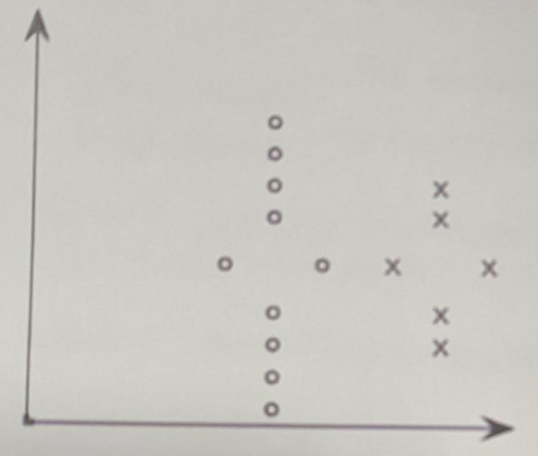
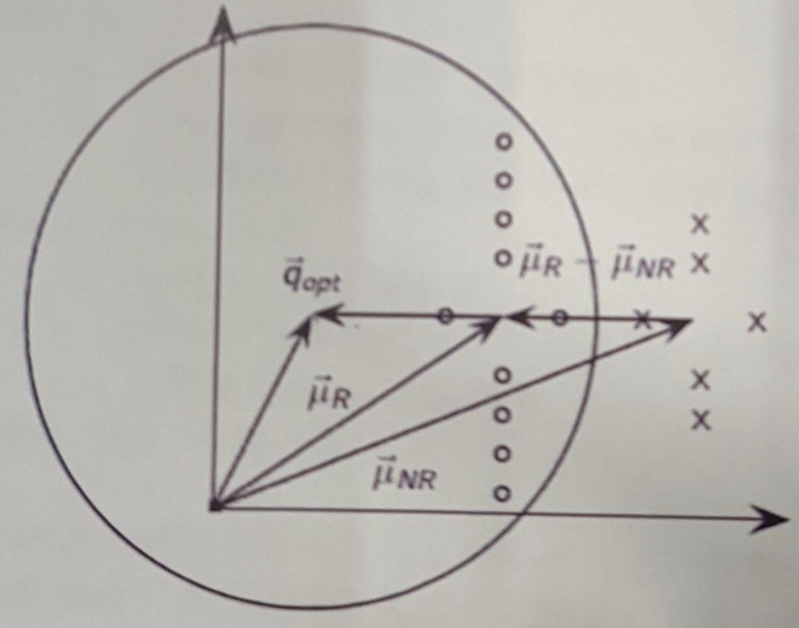

2020-2021-1 期末试卷A和答案¶
(A)卷 考试形式闭卷
院系：_ 年级：_ 专业：__
姓名：_ 学号：_ 成绩：__
一、填空题 32分 (每空2分)¶
- 信息检索是给定用户需求，返回满足该需求信息的一门学科，通常涉及信息的【获取】，【存储】，【组织】和【访问】。(8分)
- 信息检索通常是从大规模【非结构化】数据(通常是【文本】)的集合(通常保存在计算机上)中找出满足用户信息需求的【资料】(通常是【文档】)的过程。传统信息检索主要关注【非结构化】、【半结构化】数据；现代信息检索中也处理【结构化】数据。(14分)
- 词或者词项在文档中出现的实例称为【词条】，出现多次算【多】个。【词条】经过一些【处理】(如去除停用词、归一化)之后，最后用于索引的称为【词项】。(10分)
- 基于语言模型完成文本分类过程中特征选择的方法有：【频率法】、【互信息】、【卡方计算】。(4分)
二、计算题 26分¶
1. 根据下表 计算 P、R、F1 和 accuracy，计算结果保留分数形式，不用化简。(5分)
| 相关 | 不相关 | |
|---|---|---|
| 返回 | 48 | 2 |
| 未返回 | 182 | 1,000,000,000 |
论述要点: \(P=48/(48+2)=48/50=24/25\)
\(R=48/(48+182)=48/230=24/115\)
\(F1=1/(50/48+230/48)=6/35\)
\(accuracy = (48+10^9)/(48+2+182+10^9) = 1000000048/1000000232\)
2. 请估计朴素贝叶斯分类器的参数，并对测试文档 d7 进行分类。(5分)
训练集(Training set)和测试集(Test set)如下所示：
| 数据集 | DocID | Words in document | In C1/C2/C3 |
|---|---|---|---|
| Training set | 1 | China Beijing China | C1 |
| 2 | Shanghai China | C1 | |
| 3 | Beijing Book | C1 | |
| 4 | Tokyo Book | C2 | |
| 5 | Osaka Travel Shop | C2 | |
| 6 | Singapore Book Store | C3 | |
| Test set | 7 | China Beijing Tokyo Singapore | ? |
论述要点: 1)求各个类别的概率 \(P(c)\)；2)求各个词在各类别出现的概率 \(P(t|c)\)；3)求 d7 属于各类别的概率 \(P(c|d7)\)；4)得到最后的类别。
\(P(C1)=1/2\); \(P(C2)=1/3\); \(P(C3)=1/6\)
\(B=10\);
\(P(China|C1)=(3+1)/(10+7)=4/17\);
\(P(Beijing|C1)=(2+1)/17=3/17\);
\(P(Tokyo|C1)=1/17\);
\(P(Singapore|C1)=1/17\);
\(P(China|C2)=1/15\); \(P(China|C3)=1/13\)
\(P(Beijing|C2)=1/15\); \(P(Beijing|C3)=1/13\)
\(P(Tokyo|C2)=2/15\); \(P(Tokyo|C3)=1/13\)
\(P(Singapore|C2)=1/15\); \(P(Singapore|C3)=2/13\)
\(P(C1|d7)=1/2*4/17*3/17*1/17*1/17=6/17^4=7.18*10^{-5}\)
\(P(C2|d7)=1/3*1/15*1/15*2/15*1/15=2/3*1/15^4=1.32*10^{-5}\)
\(P(C3|d7)=1/6*1/13*1/13*2/13=1/3*13^4=1.167*10^{-5}\)
D7属于C1。
3. 根据下列检索系统的正确率P和召回率R，画出基于插值的 P-R 曲线。(4分)
某个查询q的标准答案集合为: \(Sq=\{d4,d156,d829,d113\}\)
系统返回答案排序为: {d128, d84, d156(\(R=25\%, P=0.33\%\)), d6, d8, d9, d511, d829(\(R=50\%, P=25\%\)), d187, d25, d38, d48, d250, d113(\(R=75\%, P=3/14=21.4\%\)), d4(\(R=1, P=26.7\%\))}
(答: P-R曲线图中关键点为 33%、26.7%等)
4. 假设有如下文档集，请构建相应的倒排索引。不需要做索引词处理。请详细写出构建过程。(8分)
doc1: I go to the park everyday
doc2: She went to the park
doc3: I like to go to the store
doc4: He is walking in the park
论述要点: 倒排索引包含词项、文档频率、倒排记录表。
5. 加上某个搜索引擎返回5篇文档，文档的相关性为3, 2, 1, 3, 2。请分别计算 CG, DCG 和 NDCG(Normalized Discounted Cumulative Gain)。(4分)
\(CG = 3 + 2 + 1 + 3 + 2 = 11\)
\(log_{2}3 = 1.58\); \(log_{2}4 = 2\); \(log_{2}5 = 2.32\); \(log_{2}6 = 2.58\) (折扣是 \(log_{2}(i+1)\))
\(DCG = 3 + 2/1.58 + 1/2 + 3/2.32 + 2/2.58 = 3 + 1.26 + 0.5 + 1.29 + 0.77 = 6.82\)
理想排序应为：3, 3, 2, 2, 1
\(IDCG = 3 + 3/1.58 + 2/2 + 2/2.32 + 1/2.58 = 3 + 1.90 + 1 + 0.86 + 0.387 = 7.147\)
\(NDCG = DCG / IDCG = 6.82 / 7.147 = 0.954\)
三、简答题 37分¶
1. 请描述分类和聚类的区别，并分别举例说明分类和聚类的实际应用。(5分)
论述要点: 1) 分类与聚类区别：有无监督。
2) 应用例子：语言识别、垃圾邮件过滤、垂直搜索、情感分析、新闻分类、不良内容过滤等。
2. 应用 Rocchio 相关反馈方法，计算图中最优查询向量 \(\vec{q}_{opt}\)。(5分)
图中圆形点：相关文档；交叉点：不相关文档

论述要点: 考察 \(\vec{\mu}_{R}\) (相关文档均值向量) 和 \(\vec{\mu}_{NR}\) (不相关文档均值向量) 如何共同作用使得 \(\vec{q}_{opt}\) 能够将相关/不相关文档完美地分开。

3. 请描述层次聚类和扁平聚类的区别，并分析它们之间的联系。(5分)
论述要点: 给出定义，提到区别，可以用例子。描述两者之间联系点。
- 扁平算法：通过一开始将全部或部分文档随机划分为不同的组，通过迭代方式不断修正。代表算法：K-均值聚类算法。
- 层次算法：构建具有层次结构的。自底向上(Bottom-up)的算法称为凝聚式(agglomerative)算法；自顶向下(Top-down)的算法称为分裂式(divisive)算法。
4. 请描述词典压缩的主要步骤。(5分)
论述要点:
- 把词典当作单一字符串的压缩；
2) 按块存储； 3) 词项间的冗余信息(前端压缩)。
5. 请描述一元语言模型和二元语言模型的定义，并描述它们的区别。(5分)
论述要点: 1)一元语言模型定义；2)二元语言模型定义；3)考虑历史信息不同，参数规模不同。
- 一元模型(unigram):
$\(P(w_{1}w_{2}w_{3}w_{4})=P(w_{1})P(w_{2})P(w_{3})P(w_{4})\)$
- 二元模型(bigram):
$\(P(w_{1}w_{2}w_{3}w_{4})=P(w_{1})P(w_{2}|w_{1})P(w_{3}|w_{2})P(w_{4}|w_{3})\)$
6. 请列举5个您用过/听过的信息检索实际系统并给出查询样例。例如：百度，输入“信息检索”可以得到包含信息检索的网页。(5分)
论述要点: 举出如 Google, Bing 等系统，并给出样例。
7. 基于语言的检索模型与基于VSM的检索模型的共性和异性。(5分)
论述要点:
- SLMIR vs. VSM: 共性
a. 模型中都直接使用了词项频率
b. 本质上概率表示已经进行了长度归一化
c. 文档频率和文档集频率混合以后和 idf 的效果相当
- SLMIR vs. VSM: 不同
d. SLMIR: 基于概率论
e. VSM: 基于相似度，一个线性代数中的概念
f. 文档集频率 vs. 文档概率，词项频率、归一化等计算细节
8. 请对未来的信息检索系统功能提出自己的设想，以及相应的设计实现方案。(7分)
论述要点: 对目前系统提出某点不足，设想，以及方案。